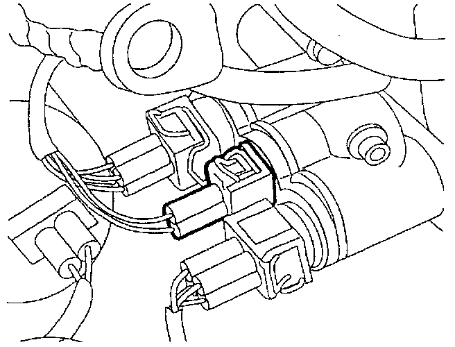

Temperature Sensor (Gauge): Locations
F163, F165, G2, G8:

Component Location View
G2:

Component View
G2 Engine Coolant Temperature (ECT) sensor
- In thermostat housing on left-front of cylinder head; integral with F87
G62, G70, G66:

Component Location View
G62:

Component View
G62 Engine Coolant Temperature (ECT) Sensor
- In Thermostat Housing On Left-front Of Cylinder Head